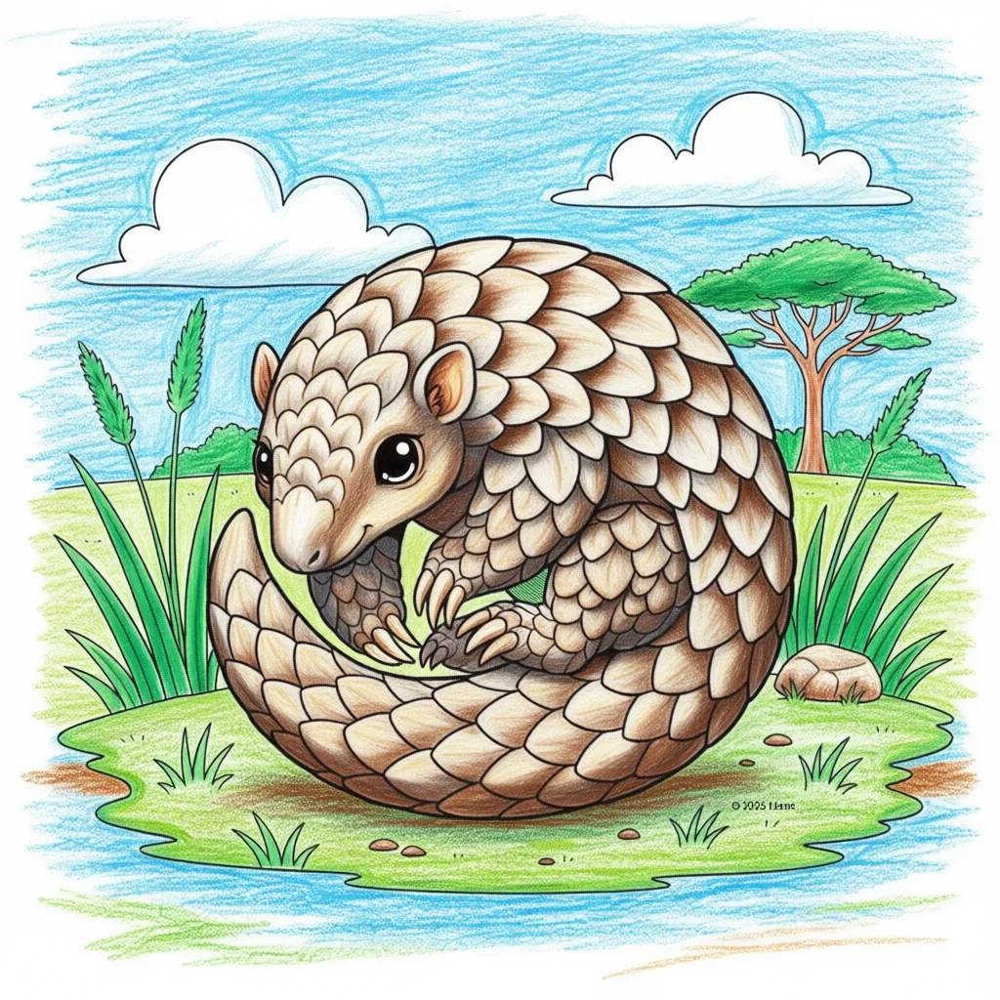

Pangolin
Manis spp

Key Characteristics
- Pangolins are the only mammals covered completely in large, hard scales made of keratin (the same stuff as your fingernails!)
- When scared, they curl up into a tight, armored ball—a perfect defense against predators like lions.
- They have incredibly long, sticky tongues that can be longer than their body, used to slurp up ants and termites.
Peculiar Facts (Fun Facts!)
- Sadly, Pangolins are the most trafficked mammal in the world, meaning they are very endangered.
- A Pangolin's tongue attaches to its ribcage, not its throat, which is super unique!
- They have no teeth and rely on stones and sand in their stomachs to grind up their food.